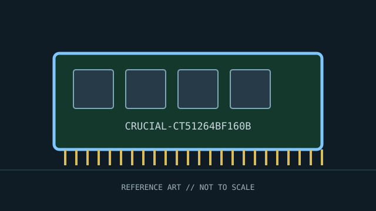

[ INDIVIDUAL COMPONENT // MEMORY / RAM ]
Crucial CT51264BF160B
Crucial DDR3L laptop memory module. This record identifies a distinct product or standards-defined module class; specifications not verified for this exact identity are deliberately left open.

IDENTITY: Crucial CT51264BF160B is cataloged as crucial ddr3l laptop memory module. Standards entries describe a module class; named manufacturer entries describe one SKU. Do not treat them as interchangeable records.
Recorded specifications
| Catalog identity | Crucial CT51264BF160B |
|---|---|
| Record type | Crucial DDR3L laptop memory module |
| Verified specifications | 4 GB DDR3L-1600 / PC3L-12800; 204-pin SO-DIMM; CL11; 1.35 V; non-ECC, unbuffered per Crucial product specification. Confirm exact label/revision before treating rank organization as known. |
| Compatibility | For laptops and compact systems supporting 204-pin DDR3L SO-DIMMs and the listed density. Host must support the module’s voltage and 4 GB module organization; a physically fitting DDR3 slot alone is insufficient. |
| Unverified/variable details | Only values supported by the cited standard or manufacturer source are stated. Confirm exact part number/revision, SPD, ranks, timings, and voltage on the specimen when not specified above. |
Platform compatibility and service
- For laptops and compact systems supporting 204-pin DDR3L SO-DIMMs and the listed density. Host must support the module’s voltage and 4 GB module organization; a physically fitting DDR3 slot alone is insufficient.
- Before installation, record the full label, manufacturer, part number, revision/date code, contact condition, chip markings, and SPD contents where present.
- Use ESD precautions, handle the module by its edges, and never force it into a slot with different keying. Power down and follow the host’s service manual.
- For server/ECC modules, confirm CPU support, buffering type, channel population, supported ranks/densities, and firmware behavior; physical fit is not proof of ECC operation.
Archival and service notes
Manufacturer-specific product record; do not treat the CT51264BF160B SKU as a generic DDR3L standard. Retain label photographs, SPD dump, and service-manual compatibility evidence. Photograph both sides before cleaning; retain the host manual, SPD dump, test host, BIOS revision, and memory-test result with the catalog record.
Sources & further reading
- Crucial — CT51264BF160B product pageManufacturer specifications for this exact Crucial part number.
- Micron — DDR3L SDRAM technical resourcesManufacturer/technology reference for DDR3L device family.
Manufacturer source identifies the named SKU where provided; standards pages describe a generation or module class. A source-family page may not capture every revision. Check the precise specimen and platform service documentation.